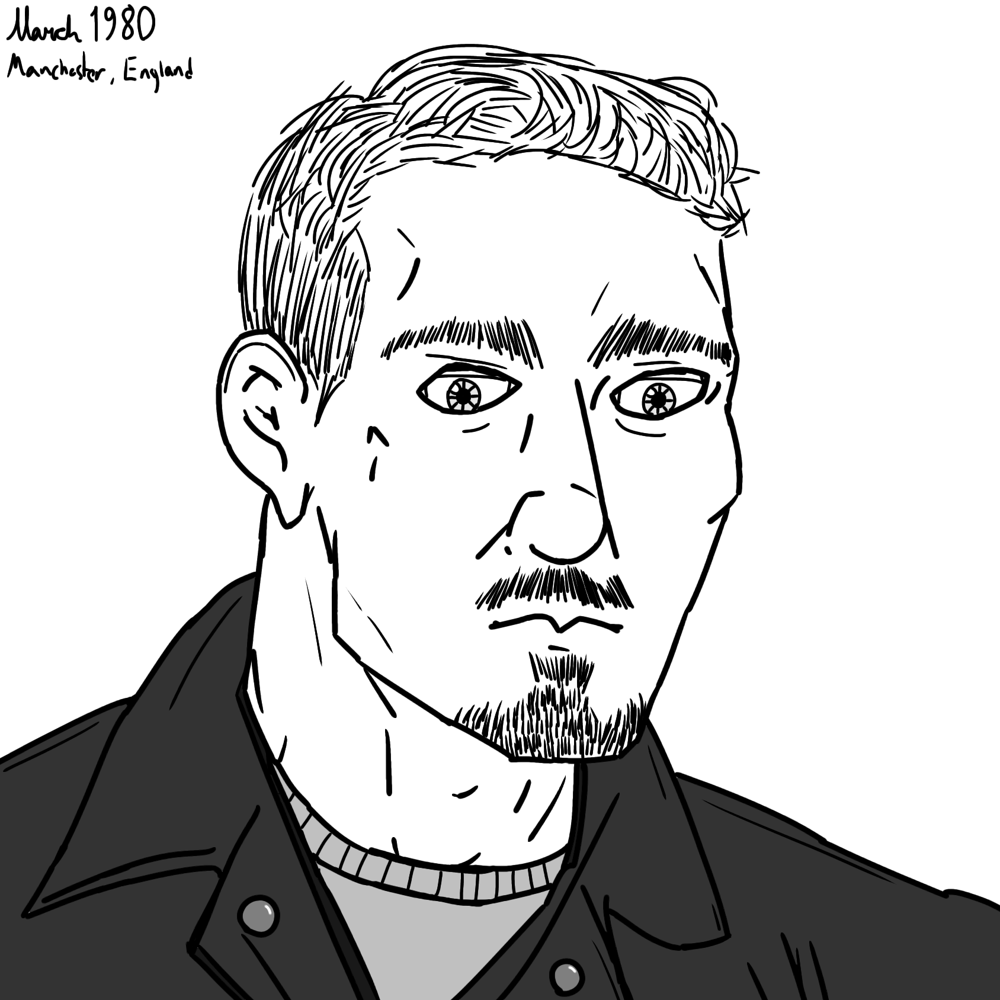

Meet The Phenoms
Thomas Burnes
Height: 6'5" / 195.6 cm.
Weight: 248 lb. / 112.5 kg. / 17.7 st.
Blood Type:
Hair Color: Brown
Eye Color: Blue
Age: 32
Nationality: United Kingdom
Bio: An Englishman, born and raised in Salford. He joined the RAF right out of high school and found his way into the 22nd SAS unit, stationed in Northern
Ireland during The Troubles. He was designated as a sniper scout and recon, overlooking contested checkpoints, attempting to stop the IRA. In his childhood,
he often got into fights and intimidated others with his physique and stature. To add to his skillset, he began Catch Wrestling and boxing, using them in and
out of the service while determined to win any fight he was put in.